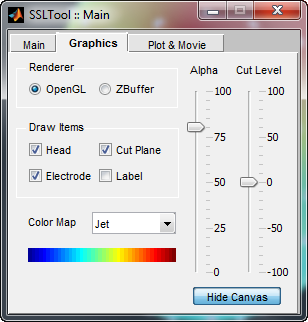
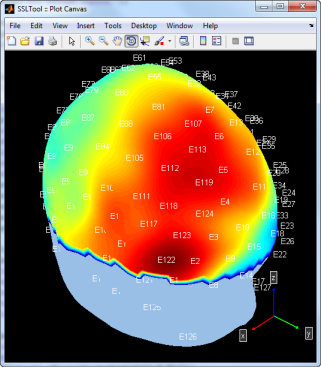
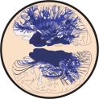

|
Home | Download | Screenshots | Project detail
SSLTool is a free Matlab toolbox for bioelectromagnetic data (EEG/MEG)
visualization, surface Laplacian calculation and modeling. SSL stands
for Spline Surface Laplacian. SSLTool provides a streamlined GUI for
model creation, data IO and cleanup, as well as SSL calculation and
visualization.
 
A screenshot of SSLTool main Graphics Gui and Plot Canvas.
- Friendly user interface. Most functionalities of SSLTool can be accessed from the main GUI, which also provides sufficient user control to interactively visualize everything in real time.
- SSL-Geo. The new SSL-Geo algorithm can compute spline surface Laplacians directly on triangular meshes, gives better result than spherical algorithms. Both SSL-Geo and SSL-Sph are presented in this package in a unified fashion.
- Fast. The core functions of SSLTool are well optimized and plotting the geometrically accurate surface Laplacian (SSL-Geo) on a full head mesh can be as fast as plotting the raw data.
- Modularized and flexible. The different modules of SSLTool can be called separately as functions or in command line, for example SSLALIGNTOOL can be used as a general purpose mesh co-registration tool.
- Currently, the model making module of SSLTool only support triangular meshes up to 3000 vertices or 6000 triangles. This is due to the consideration of memory usage. Hopefully these restrictions will be lifted in the future.
- SSLTool itself has only very limited EEG/MEG data processing and mesh processing capabilities. It is designed primarily as a tool to facilitate spline surface Laplacian calculation. Use other software packages to do data processing tasks.
- SSLTool is developed on Matlab version R2010b, and has been tested on version R2009a and above. However due to a bug in Matlab Java engine, some java controls cannot display properly on version R2010a or earlier, and has been replaced by standard Matlab uicontrols (only minor aesthetic impacts).
Installing SSLTool is as simple as unzipping the downloaded package into a path recognized by Matlab.
You can also manually add it (temporarily) by locating the unzipped folder from Matlab current folder browser, and right-click on it to choose
"Add to path >> selected folders and subfolders".
Siyi Deng, PhD
Human Neuroscience Lab, University of California, Irvine
sdeng(at)uci.edu
Ramesh Srinivasan, PhD
Human Neuroscience Lab, University of California, Irvine
SSLTool is release under BSD License, See here for the full license.
This software is provided “as is” and the University of California and its collaborators do NOT make any warranty!
This sofware was generated primarily with support of grants from the National Institutes of Health (R01 MH68004).
 |